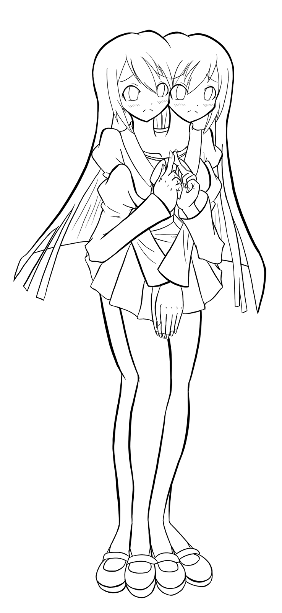
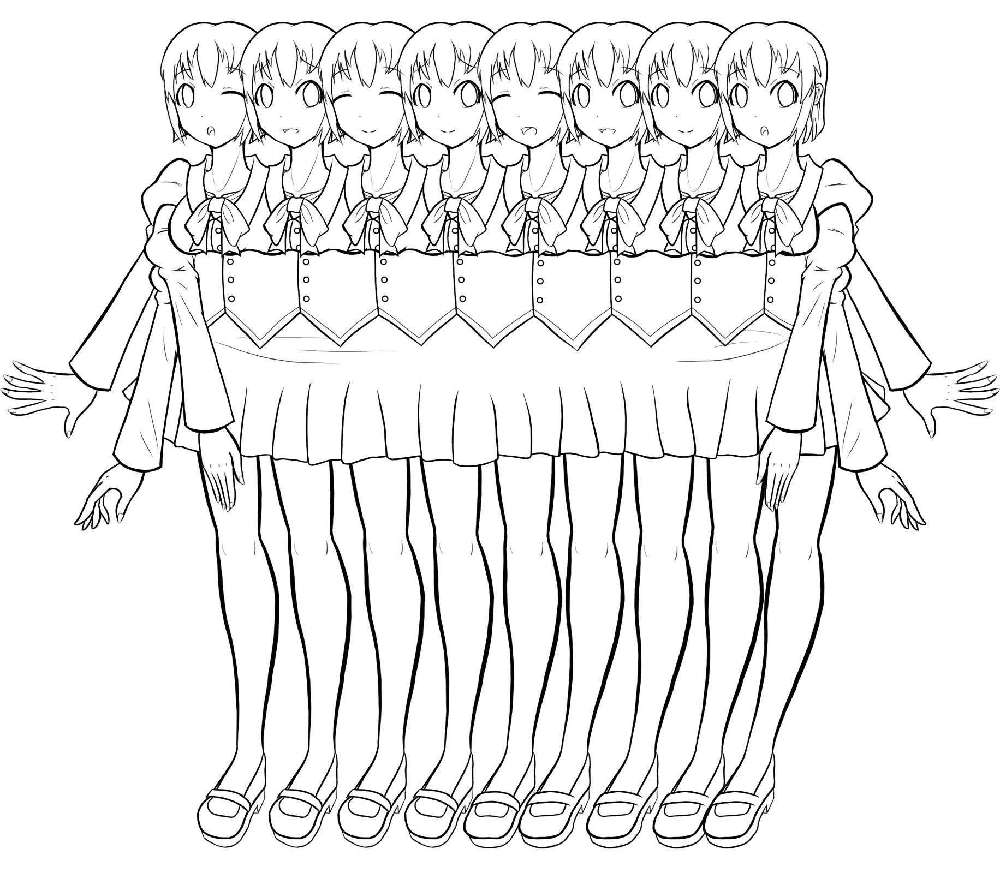

人物設定
千秋雨靜
千秋氏三女、十六歲。擁有雙頭、四手和四足。改程歷時兩年、遠超其姐、綾門與優真、過程中曾經數度瀕臨夭折、故出生後最受父母寵愛、亦面臨其期望和壓力。千秋氏原爲上都望族、然近年退出政界、以經商與研究爲業。
目前在棲霞市雲林學院高等部一年就讀。
佐野米香
雨靜的同班同學和摯友。同十六歲。擁有八個頭、是全雲林最多的、也因此成為了眾人羨慕的對象。雖然看上去身體很寬，手夠不到中間，然而它的六隻手臂可以伸長、因此並不需要他人照顧就能洗浴。
米香的父母原本打算要一個十二頭的女兒：這樣她的頭的數量就會超過當時全九州頭最多的人、偶像XX。然而在她的改造過程中出現了差錯、導致十二個大腦無法完全連結、故只能通過拆分的方式讓兩個自我意識各自都擁有一個身體、於是米香和她的孿生妹妹YY就這樣誕生了。
如此龐大的身體對米香的生活造成了一些不便、不過九州華族崇尚多頭、有更多頭的人會受到他人仰慕。「我很喜歡這種感覺、它讓我覺得我很特別。」
在學校中、米香和雨靜是無話不說的好友。「她（雨靜）第一次見到我的時候嚇了一跳、然後就在我身邊不停聊天、就像見到了喜歡的偶像一樣。」不過在心底、相比自己的身軀、米香更喜歡雨靜的身體。「她的身體要更靈活點…也要更健康罷」。